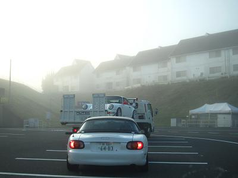
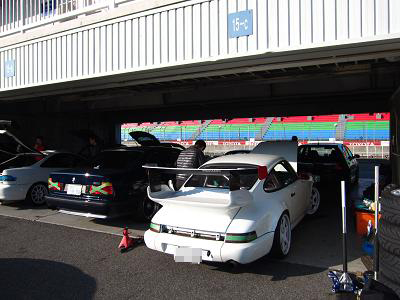
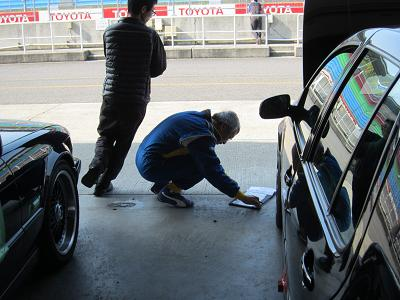
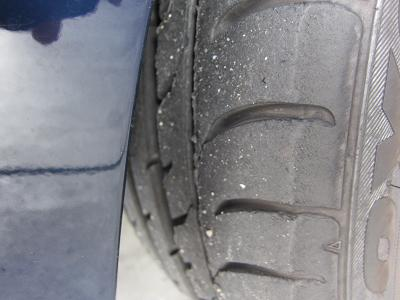
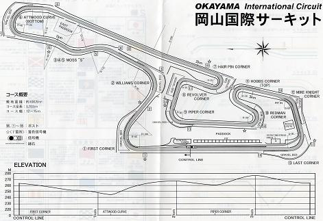
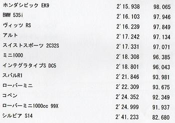
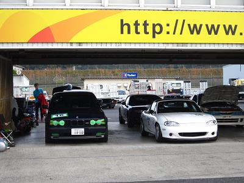

 早朝５時に出発し、到着したのが８時頃。 お店の積車の後ろに付いて走ってきた。たまにはゆっくり走るのも良い。
|
 それぞれ走行に必要な準備をします。 今回は車載カメラを用意し走行シーンをアップしようと思っていた。 イイ感じに撮れたものの、映像が上手く編集できずアップするのを諦めた（汗 簡単な映像編集ソフトがあれば教えてくださいm(_~_)m
|
 タイヤの空気圧を調整します。 今回は冷間で1.7に設定。 そして最後にパドックから出てクリアラップを確保します。 １回目の走行です。 まずはコースを覚えて少し慣れてきたところで攻めてみます。 タイヤの空気圧を落としすぎたのか、ブレーキをかけると車重でタイヤが潰れてまともに曲がれません（汗 ２回目の走行は１回目の走行を踏まえ、冷間で空気圧を2.0に設定します。 サーキット仕様にブレーキパッドを前後交換してきたので良い感じです！ ５周全開で走ってもタレてきません＾＾ タイヤも良い感じになってきました！ ３回目の走行は。。 ５周くらい走ったところでガソリン臭とクラッチが重くなってきたのでピットイン！ しばらくすると直ったが、このまま走行終了となった。
|
 ブレーキと足回りが良かったのでコーナーではかなり攻めた走りが楽しめた。 その代償に大事にしてきたタイヤがかなり消耗してしまった（汗 ３４はサーキットでもストロークのある足のほうが楽しく走れるように思う。
|
 岡山国際サーキットのコース図だ。 鈴鹿と比べてメインストレートも短く、コーナーにバンクが付いているので１コーナーに飛び込む怖さはあまり感じない。 メインストレートでの終速は180km/hくらいだ。 バックストレートを終えて、リボルバーコーナーからテクニカルゾーンが続く。 ここでは２速全開で駆け抜ける。 スタビライザーが良い仕事してくれているのが良く分かる。 最終コーナー手前で３速に入れて、フルスロットルでメインストレートへ。 ここは少し登り勾配になっている。 ３周目にはクラッチから「ザザザーーーー」っと滑っているような嫌な音がしていた（笑
|
 今回のＭゴローのベストタイムは2分16秒103だ。 ＢＭＷ５シリーズで走るような変な奴は居ない（笑 好きな車で走るから良いわけで、Ｍゴローはあまりタイムは気にしていない。 もし、もう１台Ｅ３４が居れば話は別だが・・・（笑 初級クラスでも速い車は１分55秒で走っていた。 Ｍゴローがどんなレベルか分かってもらえるだろう（爆
|
 サーキットを走って改めて感じたが、Ｅ３４は本当にハンドリング、足回りが完成された車だと思う。 見た目はオッサン向けセダンだが、電子制御はＡＢＳのみで思ったままに扱えるよく出来た車だ。 コーナーの多いサーキットでコンパクトカーを追い回すには車重がネックになってしまうが、 もう少しパワーがあれば足とブレーキだけでそこそこイケるように思う。 旧車だから壊れないように労わって走れって・・・？ いやいや、車は走ってこそです＾＾！ 置いてるだけでも壊れるし（爆
|